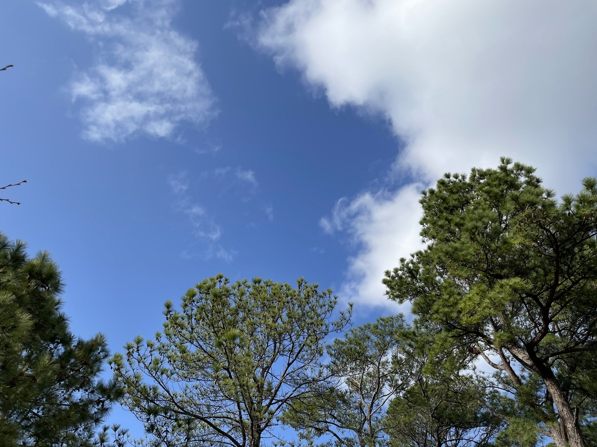

最近とても暖かく、いつも冬は引き籠もりになる自分も3月や4月は自然と外へと足が伸びる。
毎年、春はどうやって外出するようになるのだろうと、冬の間は案外真剣に考えるのだけれど、毎回正直いってわからない。そして春になると体に組み込まれたリズムであったかのように普通に自転車などでいろんなところに行くようになる。
こうしたことは、禅でいうところの不立文字の一つなのだろうといつも思う。
それにしても、晴れていて暖かい日というのは何もかもが美しく見えるので、雨のしとしととした落ち着いた雰囲気も好きではあるのだけど、この春らしい陽気や、もうすぐ桜が咲くといった植物の変化を如実に楽しめるのは本当に心地が良い。
もしかすると、天気の子で描写があったように、四季というのが無くなってしまう未来もあるのかもしれないし、最近の異常気象を考えるとその片鱗も若干あるように思いつつ、もしそうならないためにできることが一つでもあるのであれば自分も意識していきたいと思ったりもする。
――
毎日の今の瞬間というのは、どんな瞬間であれ一期一会で、かけがえのない時。
それがどんな一瞬であっても、穏やかに過ごしていきたいと願うし、みんなが穏やかに過ごしていくために自分ができることがあるならば、可能な限りやっていきたいと思う。